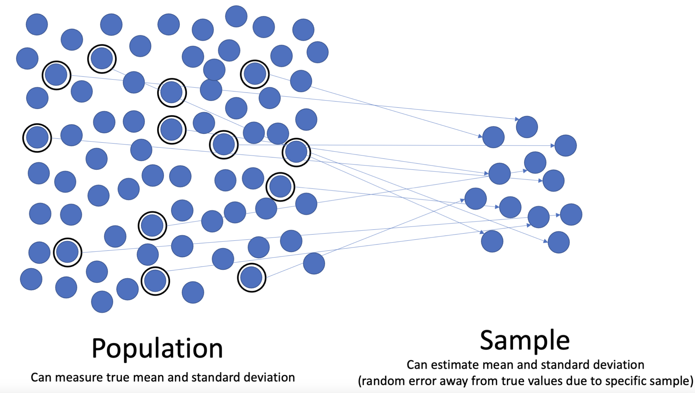
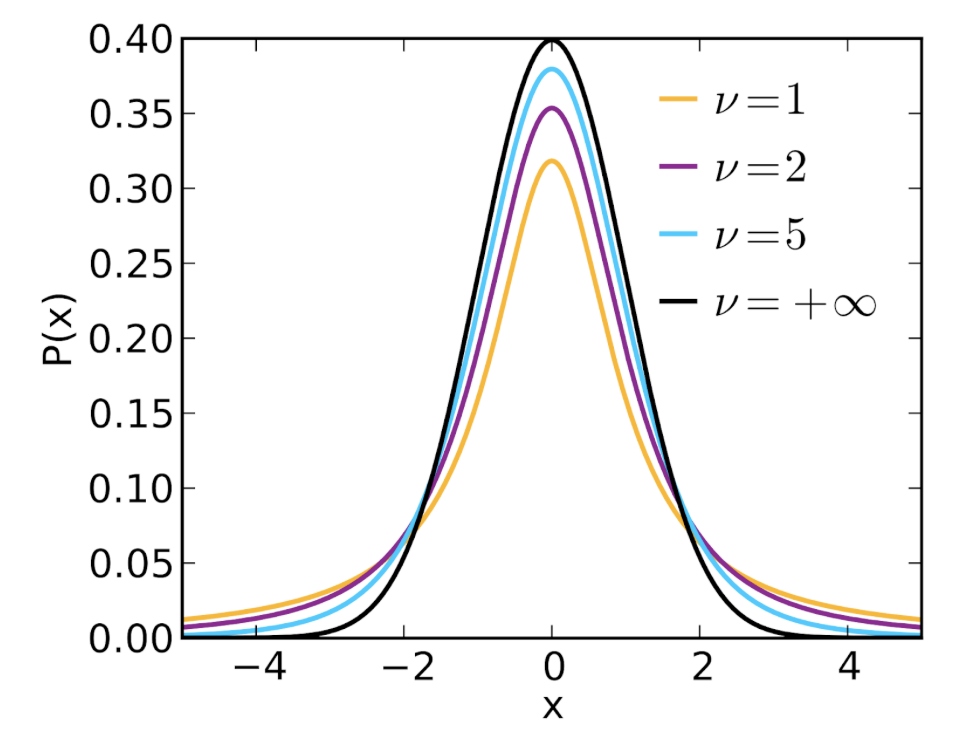
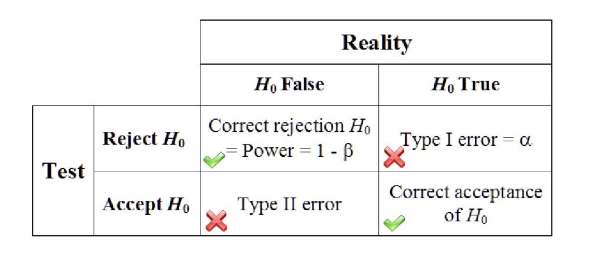
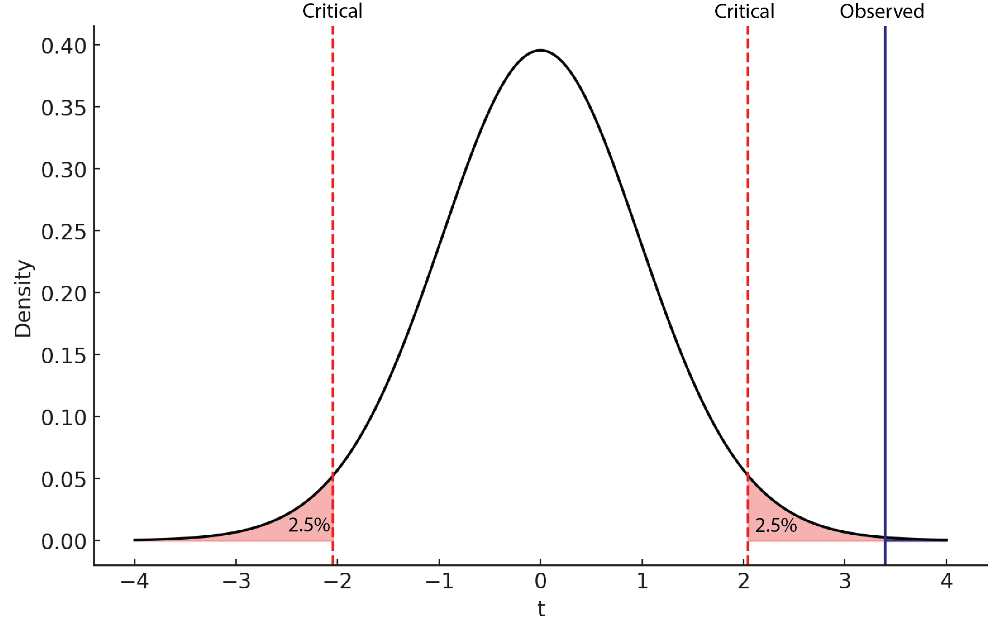

12 Foundational Statistics
Statistics is essential for drawing meaningful conclusions from data. It allows us to go beyond our observations to ask: how likely is it that we would observe the same thing again? Could we have observed these data by chance? Is this enough of a difference to be meaningful? Statistics enable us to develop theories, formulate testable hypotheses, gather evidence, and update our theories as new data emerges. Statistics can be broadly divided into two categories: the descriptive statistics that summarize data and inferential statistics that allow us to draw conclusions about that data. This is a large topic and we will not cover all of statistics here. For interested readers, there are excellent open textbooks cited at the end of this chapter. Let’s first examine some key definitions and concepts.
Some Key Concepts
Data: The term “data” is plural. Data are the measurements or observations recorded in a study. Examples of data in cognitive neuroscience include reaction times, the records of whether a trial was correctly classified (by a human or a machine learning classifier), or the voltages recorded from the scalp in an EEG experiment. “Datum” is the singular term representing one measurement or observation. A datum is sometimes called a “raw score”, or simply, “score”.
Distribution: A probability distribution gives the probabilities of all possible outcomes of a certain event space. This can be discrete (e.g., a flip of a fair coin, the probability of selecting a particular card out of a deck) or continuous (e.g., the heights of all people). A histogram is a graph that shows data distributions. These can be converted to probability distributions by ensuring that all outcomes sum (or integrate) to 1. The shape of a distribution is highly informative about the relative frequencies of events: for example, is there one peak (unimodal) or more (multimodal)? Distributions can either be symmetrical, or positively or negatively skewed. A symmetrical distribution is such that a vertical line can be drawn through the middle of the distribution and the values on each side of the vertical line will be the mirror image of each other. A positive skew has a peak to the left and a tail stretching right; negative skew has the opposite.
 (“Relationship_between_mean_and_median_under_different_skewness”, 2025)
(“Relationship_between_mean_and_median_under_different_skewness”, 2025)
Population: A population is the set of entities we want to make inferences about. In cognitive neuroscience, we almost always mean “all people” as our population of interest. We can’t measure all 8 billion people in our study, so we ask a certain sample of people to be in our study.
Sample: A sample is the set of observations that are meant to stand in as representatives of the population. For example, if I ask 40 Introduction to Psychology students to take part in my study, these 40 individuals are my sample. If every item in a population has an equal chance of being included in the sample, we are said to have a random sample. In theory, random sampling is great because the characteristics of the sample match the characteristics of the population, allowing us to generalize our data from the sample to the population. In practice, this is impractical in cognitive neuroscience. How would we find the contact information for all humans in all countries, get them to our lab, and be able to explain our experiment to them?

(“Population_versus_sample_(Statistics)”, 2025)Sampling bias: Sampling bias refers to a sample that varies systematically from the population we hope to generalize to. If we measured height only by sampling NBA players, we would have a biased sample because professional basketball players are markedly taller than the average human. Often, our sampling in cognitive neuroscience is one of convenience, meaning we sample from the folks in our university community who are easy to recruit. However, folks at any university are not necessarily a representative sample of people as a whole, and there have been valid criticisms of studies oversampling Western, Educated, Industrialized, Rich, and Democratic (WEIRD) samples (Henrich et al., 2010). These attributes may cause biased samples.
Sampling error: Sampling error refers to the fact that any two samples from a population will not lead to identical statistical results, due to random fluctuations. Sampling error is reduced when our sample sizes increase. Intuitively, this makes sense. A single NBA player in a sample of five people will affect the average height of the sample much more than this same NBA player in a sample of 500 people. Importantly, sampling error leads to both over- and under-estimation of population parameters, while sampling bias will systematically create an estimate that is either too high or too low.
Statistic: A statistic is the property of a sample, typically a numerical value that summarizes some part of the sample, such as a typical value (see central tendency), or how much values vary (see measures of variability).
Parameter: A parameter is similar to a statistic, but it is a property of a population. Because we can seldom observe an entire population, parameters are often things that we estimate from our sample statistics.
Descriptive Statistics
Let’s say we just ran an experiment with 40 participants. We have each participant’s reaction time in each of the 200 trials in the experiment. How can we start to make sense of these 8000 individual numbers? Descriptive statistics allow us to summarize these data. We will mainly focus on 4 types of descriptive statistics: measures of central tendency, measures of variability, measures of relatedness, and types of distribution.
Measures of Central Tendency
One question we might ask ourselves is what a typical reaction time would be. This is called a “central tendency” because if we plotted a histogram of our data, typical reaction times would be at the tallest parts of the graph, often near the center. (A histogram is a type of graph that plots how frequently various values were observed in a dataset.) The goal of central tendency is to find the single score that is most typical or most representative of the entire group. There are three different ways we can measure central tendency: mean, median and mode.
Mean
The mean (often called the average in casual conversation) for a distribution is the sum of all the scores divided by the number of scores in that distribution. The mean for a population is represented by the Greek letter \(\mu\) (mu) whereas the mean for a sample is represented by capital M or \(\bar{X}\) (called “x-bar”). The mean is considered the balance point of a distribution - the values above the mean must sum to the same amount as the values below the mean.
Median
The median is the middle score in a distribution that is arranged from smallest to largest. 50% of the distribution of scores lies before the median and 50% of the distribution of scores lies after the median. The median can either be a score within the list (or can lie between two scores if there is an even number of items in the distribution). To compute the median, one orders each datapoint from smallest to largest and takes the middle point (in the case of odd-numbered data) or the average of the two middlemost points (in the case of even-numbered data). The median is the best metric of central tendency when a distribution is skewed or contains outliers.
Mode
In a frequency distribution, the mode is the most frequent score or category that occurs. The mode is the sole measure of central tendency that may also correspond with an actual value in the data. Although it is the least frequently used metric of central tendency, it is the only possible metric for categorical data. Intuitively, this makes sense: you can find the most frequently selected favorite movie from your group of friends, but you cannot compute a mean or median because these are not numeric.
Measures of Variability
In addition to characterizing what a typical member of a dataset looks like, we also often want to characterize how much data points vary: what is the difference between minimum and maximum? How much variability is typical?
Range
The range of a dataset refers to the difference between the largest and smallest values. While this is simple to understand, it is not very common in practice because outliers can strongly affect its value.
Interquartile Range (IQR)
The interquartile range is the difference between a distribution’s 75th and 25th percentiles. A percentile is the value where X% of values are smaller. For example, the 80th percentile refers to the smallest value that is larger than 80% of data points. In other words, the IQR provides the range for the middle 50% of values. It is less prone to outliers than the range.
Standard Deviation
The standard deviation (denoted s for samples and the Greek letter sigma (\(\sigma\)) for populations) is the average difference between a datapoint and its mean. It tells us how different, on average, a randomly-sampled item would be from the mean. This is the most common measure of variability used in scientific research. Larger standard deviations are associated with greater data spread.
\[\sigma = \sqrt{ \frac{1}{n} \sum_{i=1}^{n} (x_i - \mu)^2 }\] This is, as shown in the figure above, the formula for computing the standard deviation for a population. For a sample, as shown in the figure below, we divide by (n-1) to account for the greater variability in a sample.
\[s = \sqrt{ \frac{1}{n - 1} \sum_{i=1}^{n} (x_i - \bar{x})^2 }\]
Variance
For some applications, squaring the differences from the mean is better. The variance of a dataset is the squared value of its standard deviation. We denote the variance of the sample as (\(s^2\)) and the variance of a population as (\(\sigma^2\)).
Standard Error of the Mean (SEM)
The standard error of the mean is a measure of expected variability of our sample mean, given sampling error. It is computed as \(SEM = \frac{s}{\sqrt(n)}\) where n is the sample size of an experiment. Larger sample variability (larger s) is associated with larger SEM, and larger sample sizes decrease SEM.
Types of Distributions
Different statistical methods will make different assumptions about data distributions. There is a whole zoo of different types of probability distributions, so we will only review the three most common here.
Normal
The normal distribution (also known as the Gaussian distribution, or a bell curve) is the most common probability distribution in statistics. This distribution is unimodal (has only one peak), symmetrical (is not skewed), and shows up all the time in nature. Many of our physical attributes are normally distributed, including height, shoe size, and our weights at birth. The ubiquity of the normal distribution is one reason for its popularity. The other reason is that the central limit theorem states that the distribution of sample means will follow a normal distribution, as long as your sample size is large enough. What’s more remarkable is that this is true regardless of the underlying distribution of the data! Nearly all major statistical tests assume a normal distribution for this reason. A third reason for the popularity of the normal distribution is that it can be fully described with only two parameters: 𝜇, describing the mean and 𝛔 describing the standard deviation.
A helpful application of the normal distribution is to calculate Z-scores (sometimes known as standard scores). The purpose of a z-score is to show exactly where a datum is on a normal distribution. This is helpful for comparing across different metrics or individuals. Z-scores are in units of standard deviation away from the mean. Hence, a z-score of 0 indicates that a score is the mean, a positive z-score tells you that the score is above the mean, and a negative z-score indicates a value below the mean. For example, a z-score of +2 means the score is two standard deviations above the mean.
To calculate a z-score, one subtracts the mean from the raw score and divides by the standard deviation:
\[ Z = \frac{X - \mu}{\sigma} \]
T-Distribution
The t-distribution (also called Student’s t-distribution) looks a lot like the normal distribution, except it has heavier tails. This means that there are comparatively more observations in the extremes, with fewer observations around the central tendency. The t-distribution does a better job of capturing the variability in smaller samples (sample sizes less than 100). It can be shown that the t-distribution becomes identical to the normal distribution at infinite sample sizes. The t-distribution is described by only one parameter, the degrees of freedom (equal to the sample size - 1).

(“Student’s t-Distribution,” 2025)Binomial
The binomial distribution describes the data distribution for binary outcomes (success versus failure; heads versus tails; Red Sox versus Yankees). We often see the binomial distribution in models where we aim to predict the factors that will make a participant succeed or fail at a given task.
Inferential Statistics
While the goal of descriptive statistics is to characterize the properties of your sample, the goal of inferential statistics is to make inferences about the underlying characteristics of the population. Statistics is powerful when it can generalize beyond our observations. As such, inferential statistics typically makes up the supermajority of most statistics syllabi.
Confidence Intervals
Confidence intervals are like standard error of the mean, in that, both describe how sampling error can limit knowledge about true population parameters. In fact, both are often used in the construction of error bars on scientific plots. A confidence interval provides a range of uncertainty about a population parameter, given the variability in the sample statistics. Confidence intervals are very frequently misunderstood. Many people falsely believe that a 95% confidence interval means that there is a 95% chance that the population parameter is inside that interval. Unfortunately, we have to be very careful with our interpretation. A population parameter either is or is not in the confidence interval, and the procedure guarantees that the confidence interval will capture the parameter 95% of the time. In other words, if you were to repeat your experiments tens of thousands of times, each time taking a new sample and creating a new confidence interval, that 95% of the confidence intervals would include the population parameter. Although 95% confidence is the most commonly used interval, one can specify any level of confidence. For example, a 99% confidence interval would be more likely to capture the population parameter (it will fail 1 out of 100 times instead of 1 out of 20 times), but this comes at the cost of being a wider interval. To compute a confidence interval: \[ \text{Population mean} = \text{Sample mean} \pm (t_{\text{critical}} \times \text{SEM}) \]
Where t-critical is given by the 95th percentile of the t-distribution, given the sample size, and \(\text{SEM} = \frac{s}{\sqrt{n}}\).
As you can see, an error bar that reflects a 95% confidence interval will be wider than an error bar reflecting standard error of the mean since we multiply by the critical t-value. Further, we can also see that, like SEM, the width of the 95% confidence interval decreases with increasing sample size.
Null-hypothesis significance testing
When most psychologists think about statistics, they are thinking about null-hypothesis significance testing (NHST). The myriad tests involved in this enterprise take up roughly 50-66% of an undergraduate course in statistics. Students often find them to be one of the most frustrating parts of the course. The chief reason for this is that NHST does not measure what we intuitively want it to measure. Misinterpretations of NHST are common, even among professional statisticians! (Lecoutre et al., 2010). Despite these difficulties, NHST is still a standard set of tools in this field, so we will cover the main ideas and then some of the main controversies.
As a researcher, you have some hypothesis about the world, and you want a quantitative method to determine whether your data support this theory. While we can’t accept a theory based on inference from a sample (yeah, all of the swans in your sample are white, but there might be black swans in the world), we can reject a hypothesis based on a sample (a single black swan would force us to reject the hypothesis that ‘all swans are white’). Therefore, rather than trying to accept our actual hypothesis, we will aim to reject the null hypothesis (denoted \(H_0\)), which is the hypothesis that there is no such effect (the difference between experimental and control groups is zero, for example).
Importantly, there are two ways that your data and your hypotheses could align: the null-hypothesis could be true, and your data could support retaining the null hypothesis; or the null hypothesis could be false and your data support rejecting the null hypothesis. However, this also means that there are two ways that we might be wrong. If the null hypothesis is true, but we reject it, this is called a Type I error. If the null hypothesis is false, but we retain it, we have made a Type II error. While both types of errors should be avoided, we generally view Type I errors as much more serious. In many applications, this makes sense: you don’t want to state that your new vaccine prevents some illness when the data do not support it.

(Statistical Inference - Wikiversity, n.d.)
Because Type I errors are far less acceptable, NHST sets the maximum acceptable Type I error rate through a parameter called α. The most common levels of α are 0.05 and 0.01, reflecting a 5% and 1% risk of making a Type I error, respectively.
We will then model the null hypothesis using the appropriate distribution. This can be the normal distribution for large datasets, or the t-distribution for more modest sample sizes, or other distributions for more specialized tests. We will first divide α between the two tails of the distribution (e.g., an α=0.05 would leave 2.5% of the probability density in the left tail and 2.5% of the probability density in the right tail). This is called a two-tailed test and leaves open the possibility that our result might be more extreme because it’s larger or smaller than predicted by the null hypothesis. In cases where it is only possible to go in one direction, one can place all of alpha in one tail, making it a one-tailed test. Either way, these critical values will help us determine statistical significance. We will then compute the probability of obtaining our test statistic, given this null distribution. This in effect says “If the null hypothesis were true, what is the probability of obtaining my result or something more extreme?”. This probability is known as the p-value. If this probability is smaller than α, then we reject the null hypothesis and consider the result “statistically significant”. In effect, this is saying that our data would be so unlikely if the null hypothesis were true that we reject the null hypothesis.

(VCL, 2025)Steps of conducting a null hypothesis significance test
- State the null and alternative hypotheses.
- Set the alpha level (α)
- Determine critical values for either a one- or two-tailed hypothesis
- Compute the probability of the data given the null hypothesis to obtain a p-value
- Accept or reject the null hypothesis
Controversies
- A p-value does not state the probability that your hypothesis is false (but people think it does).
- Alpha levels are arbitrary and can lead to “p-hacking”, an unethical practice whereby a researcher might change experimental plans to bring a non-significant effect into statistical significance by running another participant, changing exclusion criteria, etc.
- The tests are only valid when the assumptions of the test hold. Too few researchers check these assumptions in practice.
- Statistical significance is not practical significance.
Effect size versus statistical significance
The statistical significance of a result tells you how unlikely it is that it was generated from the null hypothesis. However, it does not tell you how large the effect is in real terms. Imagine that I was able to recruit 7 billion of the world’s 8 billion people to my experiment testing a new “smart drug”. If each of the 3.5 billion people in the experimental group improve their IQ scores by exactly one point, then the result is highly statistically significant. However, these 3.5 billion people will be unlikely to notice a difference in their cognition, because one point on a standard IQ test is only 7% of a standard deviation of difference! In this way, a statistically significant result is not necessarily a large result. Some of the statistics we have covered, such as correlations, are themselves effect sizes. Other metrics, such as Cohen’s D standardize effect sizes using a logic similar to z-scores.
\[ d = \frac{M1 - M2}{S_p} \]
Here, larger absolute values indicate larger effects. Cohen originally offered the following definitions of small, medium, and large effects (small: less than 0.2; medium: 0.4-0.5; large: 0.63-0.8; very large: greater than 0.87). However, he also noted that these depend on the context of the experiment and the norms of an individual field.
Further Reading
We recommend the following sources for more information on this topic:
Danielle Navarro Learning Stats with R
Practice Questions
What is an example of a right-skewed distribution in the real world?
Why is it useful to look at the interquartile range?
A study finds a statistically significant improvement in performance using a new technology. From a statistical standpoint, what should you focus on when deciding if the improvement is meaningful enough to justify adoption? A. The p-value, because it tells you how different the results are from the standard method B. The sample size, because it determines reliability C. The effect size, because it tells you how big the improvement is D. Only whether the result is statistically significant, not magnitude